Contents
|
Instructions:
|
Input Panels:
|
Dialogs/Links:
|
Output Tables:
|
Informational Tables:
|
Importing a Hero
- Select the battle.net realm from the drop-down
- Enter the battletag in the two fields labeled "battletag" (a battletag has 2 parts: a "name" and a "number", separated by a "#" character. Enter each part separately)
- Click "Get Hero List" to retrieve the list of heros
- Select the hero from the drop-down list
- Click "Import" to import the hero
This will import the hero's items and skills and run a simulation based on the profile and other input fields.
Note: the battle.net API does not provide access to paragon points (except dexterity which can be calculated), so you will have to enter them manually. If you do this after hitting "Import" simply click "Simulate" to re-run the simulation. If you do this before hitting "Import" then they are already included in the simulation.
How it Works
After importing a hero, or after clicking the "Simulate" button, the calculator will run a simulation using the data from all the input fields. The simulation will run until either:
- All targets are dead
- The simulation time limit has expired (specified by the field "Simulation Time Limit (seconds):")
For each tick of the simulation, it will select skills (the skill selection criteria is dependent on the build; in the future there may be more options for specifying skill selection logic),
and determine the damage to one or more targets. You must have a primary target (e.g. a Rift Guardian) and you may have zero or more additional
targets. At the conclusion of the simulation, the results are summarized and displayed in tables, along with a very detailed Damage Log.
You may also export the results to Excel.
Simulation Output
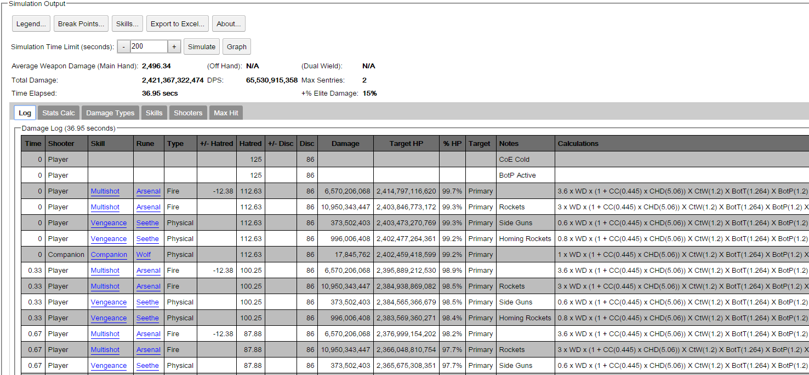
After the simulation is complete, the results of the simulation will be displayed in the panel labeled "Output." The top of the output panel displays the total damage, damage per second and time elapsed. Additional calculated values are shown for average weapon damage for main hand and offhand/dual wield (if equipped), along with the maximum number of sentries that may be deployed and total bonus elite damage.
Buttons across the top row provide access to
The field labeled "Simulation Time Limit (seconds):" may be used to limit (or extend) the maximum simulation time. Clicking the button labeled "Simulate" will re-run the simulation.
Within this panel there are also several tables:
Stat Calculator
The stat calculator lists various attributes along with the effect of increasing (or decreasing) has on the total damage output. For each attribute
the table displays the total simulation time, along with percent increase/decrease from the current simulation, total damage and dps, along with percent increase/decrease
from the current simulation.
Clicking the "+" and "-" buttons on the spinner for each attribute will immediately re-run the simulation for that attribute, displaying the results in real time.
Damage Type Summary
The damage type summary table displays, for each elemental damage type (fire, cold, lightning, physical, poison, holy, arcane) the number of "attacks" (which can also include companion/sentry attacks and item/gem procs), the average damage per attack, total damage, total damage per second and percent of the overall total.
Skill Damage Summary
The skill damage summary table displays, for each skill (also includes gem and item procs) the number of "attacks", the average damage per attack, total damage, total damage per second and percent of the overall total.
Shooter Summary
The shooter summary table displays, for each shooter (player, companion, sentries) the number of "attacks", the average damage per attack, total damage, total damage per second and percent of the overall total.
Damage Log
The damage log table displays, for each simulation "event" several pieces of data:
- Time : The simulation time at which the event occurred
- Shooter: The "shooter" for the event
- Skill: The skill being used
- Rune: The rune (if applicable) being used
- Type: The elemental damage type of the skill being used
- +/- Hatred: Hatred gain/cost from the event
- Hatred: The player's total Hatred after this event
- +/- Disc: The Discipline gain/cost from the event
- Disc: The player's total discipline after this event
- Damage: Damage caused (if any) by this event
- Target HP: The target's health after this event
- % HP: The target's percent of maximum health after this event
- Target: Which target was hit by this event
- Notes: various notes regarding the event (see Legend for abbreviations)
- Calculations: the damage calculations for this event (see Legend for abbreviations)
Paragon
The Paragon input panel allows you to enter the values for paragon points that affect damage output.
Note: Paragon points other than Dexterity must be entered manually (they are not available via the battle.net API).
If you change these after importing a hero, click the "Simulate" button to update the output. If you set these before clicking "Import"
then the simulation output has used the values you provided.
As you change each value in the "offense points" section, the caclulator will update the total offense points and required paragon level in real time.
Save/Load
This panel allows you to save and load all of the form data. The calculator provides three mechanism to save or load data:
- Browser Storage
- Local File
- Copy/Paste
Browser Storage
You may save all form data to (and restore from) local browser storage.
Note: this option will save all data to your local browser cache. If you access the web site from another computer, the saved form data will not be available to you. Most modern browsers (IE, Firefox, Chrome) support this option by default with no special settings required (that I am aware of).
There are five buttons available for this option:
- Add: Creates a new, named entry to the local browser cache and saves the current form data. You must provide a name in the text input field next to the "Add" button.
- Save: Saves the current form data to the select entry. You must select an existign storage entry location to save to.
- Restore: Restores the form data from a saved entry. You must select an existign storage entry location to restore from.
- Delete: Deletes a saved entry. You must select an existign storage entry location to delete.
- Rename: Renames a saved entry. You must select an existign storage entry location to rename, and you must provide a new name in the text input field (next to "Add" button)
Local File
You may save all form data to (and restore from) a local text file. The format of the file is JSON.
There are 3 buttons available for this option:
- Choose File: Select this option to select an existing file which can then be used to restore form data from.
- Save File: Select this option to save form data to a file. You will be prompted to select the location/file name to save to.
- Load File: Select this option to restore form data from an existing file. You must first specify an existing file using "Choose File" button.
Copy/Paste
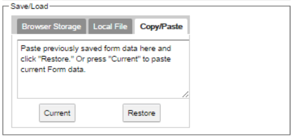
You may use textual copy and paste commands to save (and restore) all form data. The format of the text is JSON.
The text block which is initially labelled "Paste previously saved form data here..." can be used to copy or paste form data.
There are 2 buttons available for this option:
- Current: Select this option to place all current form data in the text block. You may then copy (e.g. CTRL-C or right-click/copy) the text and paste (e.g. CTRL-V or right click/paste) into another application.
- Restore: Select this option to restore form data from the text block. Prior to selecting this option, you should paste previously saved text into the text block.
Simulate
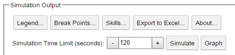
This panel allows you to configure the length of simulated time to run the damage simulation. Click the "simulate" button to start the simulation.
Compare Builds
This panel allows you to compare up to three builds. Each "column" in the table is a build that may be stored for comparison. Build 1, which is the "baseline" for comparisons, is the left-most column.
For each build, there are 3 links:
- Set: Click this link to store the current form data as this build.
- Restore: Click this link to restore from the selected build.
- Clear: Click this link to clear the selected build.
The panel will display the following data for each build that is stored:
- APS: The attacks per second
- Weapon Damage: The average weapond damage (along with percent change for builds 2 and 3, compared to build 1)
- Time: The simulation time (along with percent change for builds 2 and 3, compared to build 1)
- DPS: The damage per second (along with percent change for builds 2 and 3, compared to build 1)
Once two or more builds have been stored, the "Compare" button will display the differences in each build.
Hatred/Discipline
This panel allows you to specify the amount of additional hatred per second and increased maximum discipline from items
(do not include gains from skills or buffs, as they are specified elsewhere).
These values are populated automatically when a profile is imported.
Active Skills
This panel allows you to specify the active skills and runes that the hero will be using, along with certain skill-specific situational parameters.
The active skills are populated automatically when you import a hero.
The following skill-specific parameters must be manually set (or use defaults of "100"):
- Caltrops Uptime: The percent of the time that Caltrops should be deployed.
- Primary Target MfD Uptime: The percent of the time that Marked for Death should be active on the primary target.
- Additional Targets MfD Uptime: The percent of the time that Marked for Death should be active on additional targets.
Passives
This panel allows you to specify the passive skills (including from Hellfire Amulet) that the hero will use.
This data is populated automatically when you import a hero.
Elemental Damage Modifiers
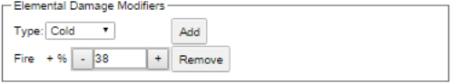
This panel allows you to specify increased elemental damage from items.
These values are populated automatically when you import a hero.
Situational
This panel allows you to specify situational inputs.
These values must all be specified manually (or accept defaults).
- Greater Rift Level: Only used to calculate target health
- Number of Players: Only used to calculate target health
- Primary Target Type: Only used to calculate target health
- Primary Target Health: Health (HP) of primary target for the simulation
- Additional Targets Type: Only used to calculate additional targets' health
- # of Additional Targets: The number of additional targets for the simulation
- Additional Targets Health: Health (HP) of each additional target for the simulation
- Percent of targets slowed/chilled: Percent of the time that Cull the Weak should be applied
- Percent of targets control impaired: Percent of the time that Bane of the Trapped should be applied
- Percent of targets at least 10 yards away: Percent of the time that Steady Aim and Unhallowed Essence 4 piece bonus should be applied
- Distance to target(s) in yards: Used for calculating Zei's Stone of Vengeance and other bonuses
- Spacing between targets in yards: Used for calculating Grenades, Single Out and certain Marked for Death runes
- Target Size (for Ball Lightning): Used for calculating Ball Lightning ticks/target
- # Health Globes: Number of health globes that will be picked up during entire fight
- Average Firing Delay (ms): Number of milliseconds of "delay" to add between player actions
Legendary Gems
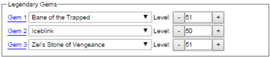
This panel allows you to specify which legendary gems (and their levels) that will be used. Some gems have additional input fields.
These values are populated automatically when you import a hero.
Other Player Buffs
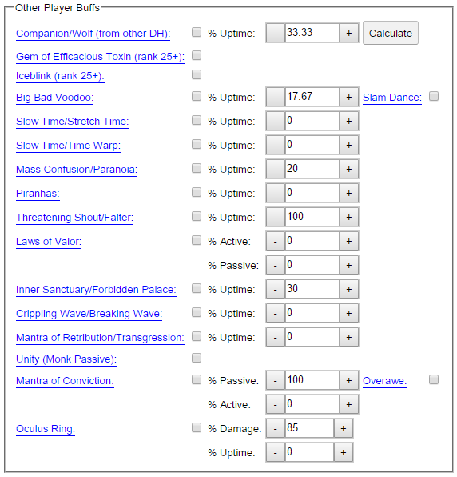
This panel allows you to specify which buffs from other players should be included in the simulation.
These values must all be specified manually (default is no player buffs).
- Companion/Wolf (from other DH): If another DH is using Companion/Wolf. Also specify the percent of the time that the wolf should be up (the calculate button uses the effective CDR value to calculate uptime).
- Big Bad Voodoo: If a WD is using BBV. Also specify the percent of the time that the BBV should be up and if the Slam Dance rune is being used.
- Slow Time/Stretch Time: If a Wizard is using Slow Time with Stretch Time rune. Also specify the percent of the time that it is being used.
- Slow Time/Time Warp: If a Wizard is using Slow Time with Time Warp rune. Also specify the percent of the time that it is being used.
- Mass Confusion/Paranoia: If a WD is using Mass Confusion with Paranoia rune. Also specify the percent of the time that it is being used.
- Piranhas: If a WD is using Piranhas. Also specify the percent of the time that it is being used.
- Laws of Valor: If a Crusader is using Laws of Valor. Also specify the percent of the time that the active portion is being used and percent of time passive only is being used.
- Inner Sanctuary/Forbidden Palace: If a Monk is using Inner Sanctuary with Forbidden Palace rune. Also specify the percent of the time that it is being used.
- Crippling Wave/Breaking Wave: If a Monk is using Crippling Wave with Breaking Wave rune. Also specify the percent of the time that it is being used.
- Mantra of Retribution/Transgression: If a Monk is using Mantra of Retribution with Transgression rune. Also specify the percent of the time that it is being used.
- Mantra of Conviction: If a Crusader is using Matra of Conviction. Also specify the percent of the time that the active portion is being used and percent of time passive only is being used. Also specify if the Overawe rune is being used
Skill Damage Modifiers
This panel allows you to specify increase damage to specific skills, from items.
These values are populated automatically when you import a hero.
Items
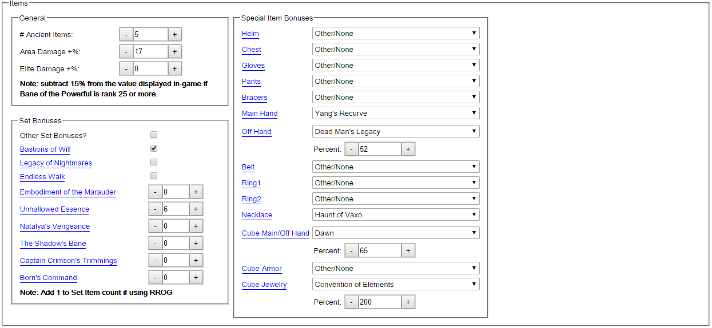
This panel allows you to specify data related to items, including sets and legendary powers.
These values are populated automatically when you import a hero.
Follower Buffs
This panel allows you to specify which follower buffs to include in the simulation.
These values must all be specified manually (default is no follower buffs).
Cooldown Reduction
This panel allows you to specify cooldown reduction from items.
These values are populated automatically when you import a hero.
Resource Cost Reduction
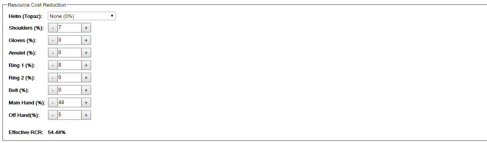
This panel allows you to specify resource cost reduction from items.
These values are populated automatically when you import a hero.
Leaderboards
This dialog allows you to examine the leaderboards for any season or era. Initially, you must select a season/era (default is latest), hardcore (if desired) and leaderbaord (default is "Solo"). You may click "battle.net" to view the leaderboard directly on the blizzard web site.
After clicking "Get Leaderboard" a list of profiles will be listed. For each profile, you may:
- Click "profile" for the battle.net career profile
- Click "hero" for the battle.net hero profile
- Click "Import Profile" to import the hero profile into the calculator
battle.net profile
This option opens the battle.net career profile for the currently selected battle tag, in a separate browser tab.
Paperdoll
This option opens a "paperdoll" view of the currentlt selected hero's equipment. From the paperdoll you can click on the battletag, hero name or any piece of equipment to see the battle.net API JSON data for that item.
Items (Dialog)
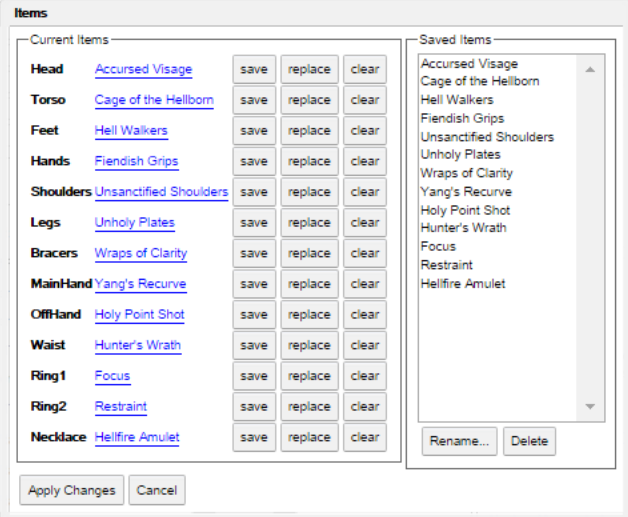
This dialog box displays a list of the items equipped by the currently selected hero and provides the ability to save those items to browser local storage. This can be used to compare various items on different heroes.
The items are populated automatically when you import a hero. On the right is a "Saved Items" list which lists the items that are currently saved to local browser storage.
For each item slot, you may click on the correspnding buttons:
- Save: Saves the item to local browser storage (displayed on right)
- Replace: Replaces the item with the selected item from local browser storage (must first select an item from the list on right)
- Clear: Clears the selected item slot
The item "Saved Items" list on the right has the following buttons (select an item in the list first):
- Rename...: Renames the selected item
- Delete: Deletes the selected item from local browser storage
Click "Apply Changes" at the bottom of the dialog will replace the hero's items in the calculator with the items in this dialog and re-run the simulation. Select "Cancel" closes the dialog without changing the hero's items.
Sheet DPS
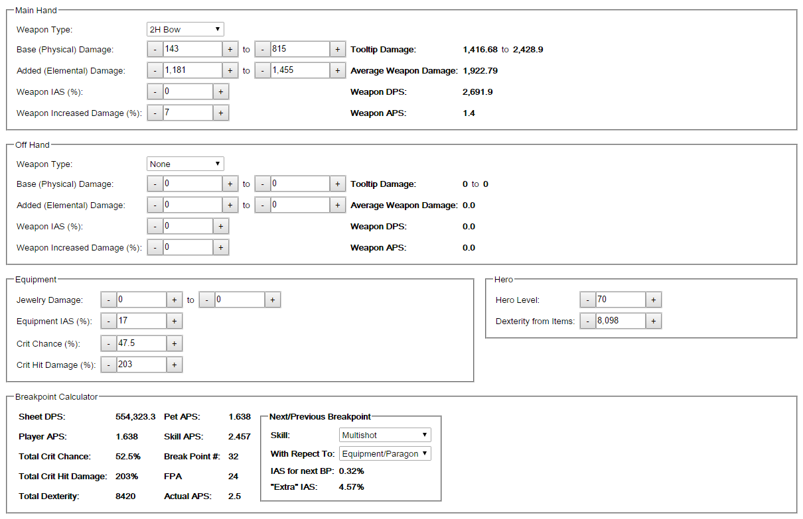
This panel displays data regarding weapon damage and attack speed, and allows the user to view IAS needed for next or previous breakpoint.
The values are populated automatically when you import a hero.
The "Main Hand" and "Off Hand" panels provide inputs for the following weapon attributes:
- Weapon Type: The type of weapon (2H Bow, 1H Xbow, 2H Xbow)
- Base (Physical) Damage: The base damage (which is based on the type of weapon)
- Added (Elemental) Damage: The added elemental damage (shown in tooltip for weapon)
- Weapon IAS %: Increased Attack Speed attribute directly on the weapon
- Weapon Increased Damage %: Increased Damage attribute directly on the weapon
The "Main Hand" and "Off Hand" panels show calculations for the following weapon data:
- Tooltip Damage: The min and max tooltip damage for the weapon
- Average Weapon Damage: The average weapon damage for the weapon ((min + max ) / 2)
- Weapon DPS: The weapon's Damage Per Second
- Weapon APS: The weapon's Attacks per Second
The "Equipment" panel provides inputs for the following data:
- Jewelry Damage: Added damage from rings and amulets
- Equipment IAS: Increased attack speed from all equipment (including set bonuses), except IAS directly on weapons
- Crit Chance (%): The additional Critical Hit Chance from all items (including set bonuses)
- Crit Hit Damage (%): The additional Critical Hit Damage from all items (including set bonuses)
The "Hero" panel provides inputs for the following data:
- Hero Level: The hero's level
- Dexterity from Items: Increased dexterity from all equipment (including set bonuses)
The "Breakpoint Calculator" panel shows calculations for the following data:
- Sheet DPS: The hero's "sheet" DPS
- Player APS: The hero's APS
- Total Crit Chance: The total Critical Hit Chance for the Hero
- Total Crit Hit Damage: The total Critical Hit Damage for the Hero
- Total Dexterity: The total Dexterity for the Hero
- Pet APS: The Pet (companions and sentries) APS
- Skill APS: The APS for the currently selected skill (in Next/Previous Breakpoint box)
- Break Point #: The breakpoint increment, for the selected skill
- FPA: The # of Frames per Attack, for the selected skill
- Actual APS: The # of actual Attacks Per Second, based on the computed breakpoint, for the selected skill
The "Next/Previous Breakpoint" panel shows selections/calculations for the following:
- Skill: The active skill to compute breakpoint data for
- With Respect to: The attribute to compute next/previous breakpoint IAS for (equipment/paragon, weapon IAS, Tasker and Theo)
- "Extra" IAS: The amount of additional IAS that would need to be dropped to lower to the previous breakpoint
Legend
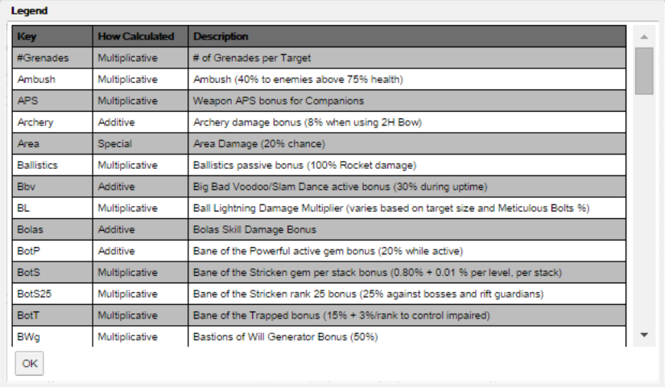
This dialog displays descriptions for abbreviations for Damage Modifiers used in the damage calculator, particularly those in the Damage Log.
Each row in the Legend table is a Damage Modifier. For each Damage Modifier, three columns of data are provided:
- Key: The abbreviation used for the Damage Modifier in the Damage Log Notes and Calculations columns
- How Calculated: How the damage is included in the calculations (see below)
- Description: A short description of the damage modifier
Damage Modifiers are combined, depending on the value of the "How Calculated" column. The possible values are:
- Multiplicative: The Damage Modifier is independently multiplicative. The value of this modifiers is multiplied against all other modifiers. For example, if the Modifier's value is X%, then the damage is multiplied by (1 + X/100).
- Additive: The Damage Modifier is grouped with other Additive modifiers. The total value of all Additive modifiers is multiplied against all other modifiers. For example, if the three Additive Modifier's value are X%, Y% and Z%, then the damage is multiplied by (1 + X/100 + Y/100 + Z/100).
- Elemental Additive: The Damage Modifier is grouped with other Elemental Additive modifiers and Elemental Damage Bonus. The total value of all Additive modifiers is multiplied against all other modifiers. For example, if the Elemental Additive Modifier's value is X% and the Elemetal Damage Bonus is Y%, then the damage is multiplied by (1 + X/100 + Y/100).
- Special: This category is for Damage Modifiers that do not fit into one of the three categories above. For example, Crit Hit Chance and Crit Hit Damage.
Break Points
This dialog displays Break Point computations for each skill and weapon type. For each BP, the following values are displayed:
- BP: The break point #
- FPA: The # of frames per attack
- Min APS: The minimum attacks per second to get to this breakpoint
- Actual APS: The computed actual # of attacks per second for this breakpoint
Skills (Info)
This dialog displays Skill/Rune data (including gem and item procs) for the simulation computations. Each row indicates a skill/rune combination that results in damage. Some skill/rune combinations may have multiple rows for multiple damage calculations. For each row, the following values are displayed:
- Skill: The Skill (or gem or item)
- Rune: The Rune (if applicable)
- Damage Type: The elemental damage type
- Multiplier: The skill damage multiplier
- Frames: The base attack frames (for skills)
- Primary: If Yes, this row affects primary target
- # Additional: The maximum # of additional targets that can be damaged (for this row)
- # Projectiles: The maximum # of projectiles
- AoE Radius: The maximum area of effect radius
- Grenades: If Yes, this row includes grenade damage
- Rockets: If Yes, this row includes rocket damage
- DoT: If Yes, this row includes damage over time
- Notes: See Legend for descriptions
Export to Excel
This button will export all of the form data and simulation computations, to include damage log, to a downloadable excel file.
About
This dialog box displays version and other information about this application.